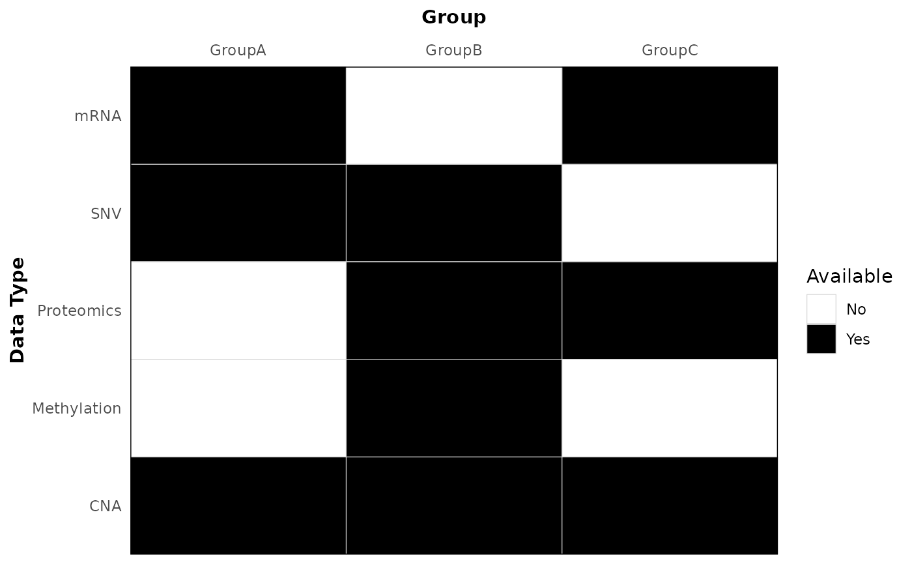

Create a tile plot showing availability (0/1) of data types across groups.
Usage
plot_data_avail_by_group(
data,
data_type = "data_type",
group = "group",
available = "available",
legend_position = "right",
tile_line_color = "lightgrey",
xlabel = NULL,
ylabel = NULL,
xlabel_top_margin = 8
)Arguments
- data
A data frame or tibble containing the columns specified by
data_type,group, andavailable.- data_type
Name of the column with data types. Default: "data_type".
- group
Name of the column with group labels. Default: "group".
- available
Name of the column indicating availability (values 0 or 1). Default: "available".
- legend_position
Legend position for the plot. Default: "right".
- tile_line_color
Tile border color (gridlines between tiles). Default: "lightgrey".
- xlabel
X axis label. Default: NULL (when supplied, shown in bold).
- ylabel
Y axis label. Default: NULL (when supplied, shown in bold).
- xlabel_top_margin
Distance (in pts) between the top x-axis title and the axis labels when the x-axis is placed at the top. Default: 8.
Examples
avail <- data.frame(
data_type = rep(c("SNV", "mRNA", "Proteomics", "CNA", "Methylation"), each = 3),
group = rep(c("GroupA", "GroupB", "GroupC"), times = 5),
available = c(1, 1, 0, 1, 0, 1, 0, 1, 1, 1, 1, 1, 0, 1, 0)
)
p <- plot_data_avail_by_group(avail, xlabel = "Group", ylabel = "Data Type", xlabel_top_margin = 10)
p
